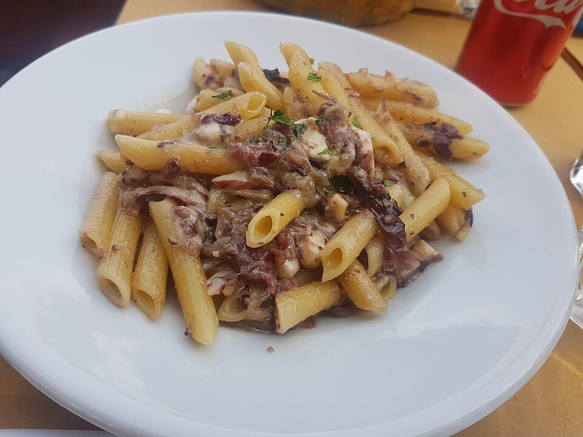

Home
Penne with Pancetta and Mushrooms

I threw this dish of penne pasta, pancetta bacon, and mushrooms together one afternoon for lunch.
Ingredients
- 1 (12 ounce) package penne pasta
- 1 (3 ounce) package pancetta bacon, diced
- 2 tablespoons unsalted butter
- 1 (10 ounce) package sliced mushrooms
- 1 tablespoon minced garlic
- ½ cup heavy cream
- ¼ cup grated Parmesan cheese, or to taste
Directions
- Fill a large pot with lightly salted water and bring to a boil. Stir in penne and return to a boil. Cook penne uncovered, stirring occasionally, until tender yet firm to the bite, 8 to 10 minutes. Drain and set aside.
- Meanwhile, cook pancetta in a large skillet over medium heat until browned but not crispy, about 5 minutes. Drain on a paper towel-lined plate and set aside. Discard pancetta grease.
- Melt butter in same skillet over medium-high heat; stir in mushrooms. Cook and stir until mushrooms softened and released their liquid. Add garlic; cook 2 minutes. Reduce heat to medium-low; stir in cream and Italian seasoning. Simmer until sauce has slightly thickened.
- Off heat, add penne to sauce; toss to coat. Sprinkle with Parmesan cheese; serve.
- Eat.